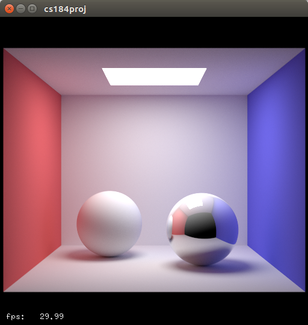
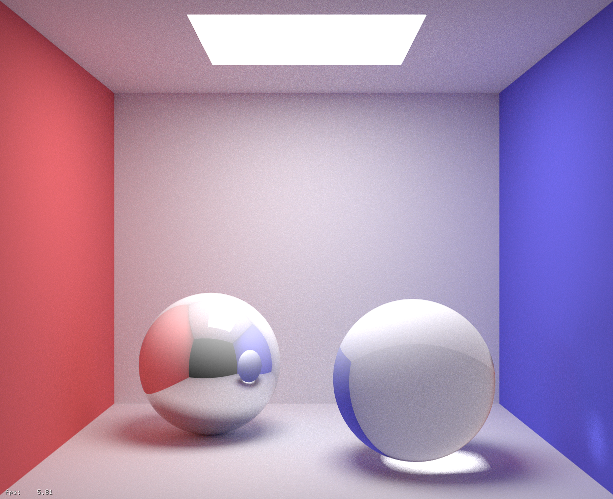

CS184 Final Project
Final Report
Summary Video
Final Slides
Abstract
The main purpose of our project is to speed up ray tracing using GPU power. After experiencing frustratingly long render times for proj 3-2 we decided to implement everything in that project again, but leveraging the power of GPU's using NVIDIA Optix ray tracing framework. This required us to learn how Optix organizes its ray tracing functions, and dive into the intricacies of cuda programming. Specifically, we aimed to support a variety of features including diffuse/mirror/glass surfaces, pinhole/thin lens cameras, sphere/parallelogram/mesh primitives, BVH's, adaptive sampling, env lights, and simple texture mappings. With the faster ray tracer, we are able to render the images of proj 3-2 very quickly and even render images that would simply not have been possible with proj 3-2.
Technical Approach
We experienced many technical difficulties in implementing the various features we support. Diffuse surfaces were already given to us by way of a tutorial example, but we needed to modify it for mirror and glass surfaces and add new cuda programs to the main context. As it turns out, this modification was relatively simple as Optix provides functions to calculate reflected and refracted rays, although the documentation of these functions were sparse for some reason and required a lot of digging to find. A pinhole camera was also provided with the tutorial. However, we also implemented a thin lens camera by modifying the ray generation program. As with proj 3-2, we defined a lens radius and focal plane distance and shot a ray from a sampled position on the lens to the corresponding point of a pinhole ray at the focal depth. This section of the project took a lot of debugging as mistakes in the ray generation usually resulted in black or overly blurry pictures. A parallelogram primitive was provided with the tutorial, and we added sphere and mesh primitive support. The sphere primitive suffered from bugs initially due to floating point precision issues that left weird rings on the sphere, and this was resolved by taking a refined intersection program from a different tutorial. Meshes also provided problems, as loaded meshes using Optix functions defaulted to a blinn-phong texture which crashed without meaningful error due executing GPU code, and could only be fixed by first providing a bogus material, then setting it to the actual desired material later. Thankfully, BVH's and adaptive sampling were provided by the tutorial. Environment lights were implemented by modifying the miss program to sample from a texture, and was implemented with relative ease. Finally, we implemented simple texture mapping for spheres using similar techniques for enviroment lights by creating a new material. Overall, the project went relatively smoothly, with the only major stalls due to errors in the GPU code which were nearly impossible to debug or even search up. There was also some difficulty in getting Nvidia Optix set up correctly in the first place. This was expected, of course, but still frustrating to deal with. However, being able to set up complicated scenes and get high quality renders in seconds was extremely satisfying.
Basic Renders (Possible with Proj 3-2)
 Basic diffuse spheres cornell box.
Basic diffuse spheres cornell box.
|
|

Including mirror material.
|
 Including glass material.
Including glass material.
|
|

High resolution image which would not be possible using proj3-2.
|
 Diffuse bunny mesh.
Diffuse bunny mesh.
|
 Lens focused on closer sphere.
Lens focused on closer sphere.
|
 Lens focused on further sphere.
Lens focused on further sphere.
|
|
Rotating our mesh forces recomputation, but reconverges relatively quickly.
|
 Environment lights.
Environment lights.
|
Advanced Renders (Not possible with Proj 3-2)
|
Simple texture map allows us to create a Jupiter sphere.
|
|
Complex mesh with fine details like this golden mirror lambo would have taken a day, but requires about 5 seconds on a GPU.
|
|
Another complex scene inspired by light field cameras that is far too complex for project 3-2.
|
|
Mirrors galore, but this complex scene also takes around 5 seconds to converge.
|
References
NVIDIA Resources
Nvidia Tutorials
Nvidia Dev Talk Forums
Other helpful repos for comparing our implmentation or debugging
https://github.com/SammyNXS/Volvox_RT/
https://apartridge.github.io/OppositeRenderer/
Proj 3-1
Proj 3-2
Contributions from each team member
Andy: setup, mirror material, thin lens, mesh, sphere primitive, env lights, textures
Chris: glass material, mesh, env lights, textures, scene generation
Raymond: mesh, env lights, textures, scene generation, video making